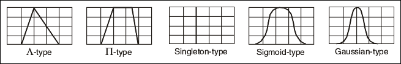
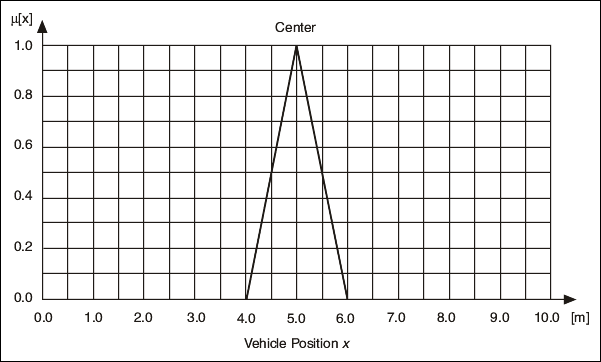
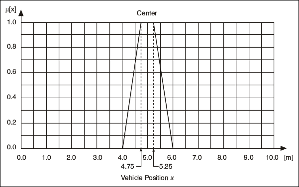
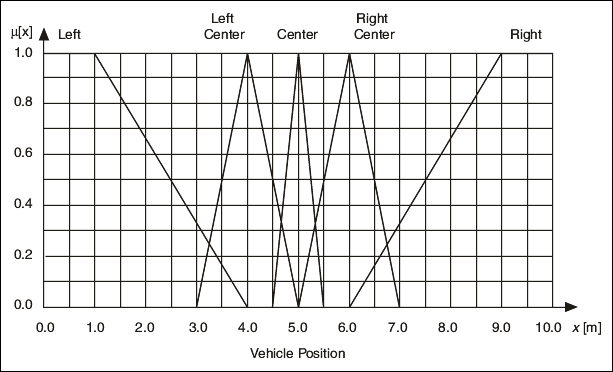
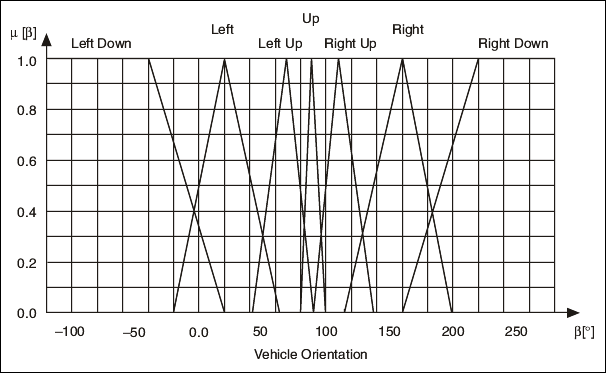
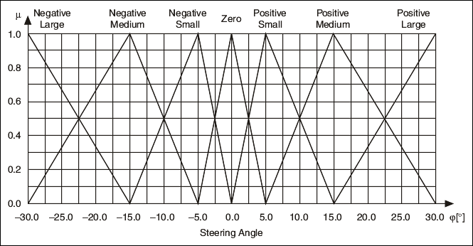

When you design a fuzzy system, you first create linguistic variables for which you define linguistic terms. After you define the linguistic terms, you must apply membership functions to those terms. Membership functions are simply numerical functions that correspond to linguistic terms. A membership function represents the degree of membership of linguistic variables within their linguistic terms.
You can apply the normalized standard membership functions shown in the following image to most technical processes. These standard functions include Λ-type (triangular shape), Π-type (trapezoidal shape), singleton-type (vertical line shape), Sigmoid-type (wave shape), and Gaussian-type (bell shape) membership functions.

For example, the linguistic variable Vehicle Position x might have full membership (1) within the linguistic term Center at 5 meters, no membership (0) within that term at 4 meters or less and 6 meters or greater, and partial membership at all distances between 4 and 6 meters. If you plot the degree of membership against the value of Vehicle Position x, you can see that the resulting membership function is a triangle function.

Sometimes a linguistic variable has full membership within a linguistic term at a range of values rather than at a point value. If, for example, the linguistic variable Vehicle Position x has full membership within the linguistic term Center at values x = 5 � 0.25 m, a trapezoidal membership function applies, as shown in the following image.

The following image shows the membership functions for Vehicle Position x.

The following image shows the membership functions for Vehicle Orientation β.

The following image shows the membership functions for Steering Angle φ.
